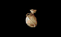

| Nia's Goods | ||
|
- Nia's Village (near Sethanon) - (Chapter 1) |
||
|
-------------------------------------------------------- |
||
| ITEMS 12/18 |
HAG 50/10 |
|
|
-------------------------------------------------------- | ||
| MOD POT BOK STA MAG ARM CRO SWO COM GEM RAT OTH |
| (No Repair) |
| NIA'S GOODS (Ch1) | BASIC | SELL | BUY | |
 |
Quarrels [25] | 12.0 | 15.6 |
5.1 |
 |
Standard Kingdom Armor [100%] | 45.0 | 58.5 |
9.6 |
| Peasant's Key | 1.0 | 1.3 |
N/A | |
 |
Rations [7] | 3.5 | 4.5 |
1.4 |
|
Rations [14] | 7.0 | 9.1 |
3.0 |
| Light Bowstring | 20.0 | 26.0 |
8.5 | |
|  | Herbal Pack [8] | 10.0 | 13.0 |
4.2 |
 |
Shovel [25] | 5.0 | 6.5 |
2.1 |
| Torch [3] | 1.0 | 1.3 |
0.4 | |
 |
Aventurine [6] | 10.0 | 13.0 |
4.2 |
| Fadamor's Formula [6] | 150.0 | 195.0 |
64.3 | |
| Restoratives [12] | 50.0 | 65.0 |
21.4 | |
| NIA'S GOODS (Ch1) | BASIC | SELL | BUY | |